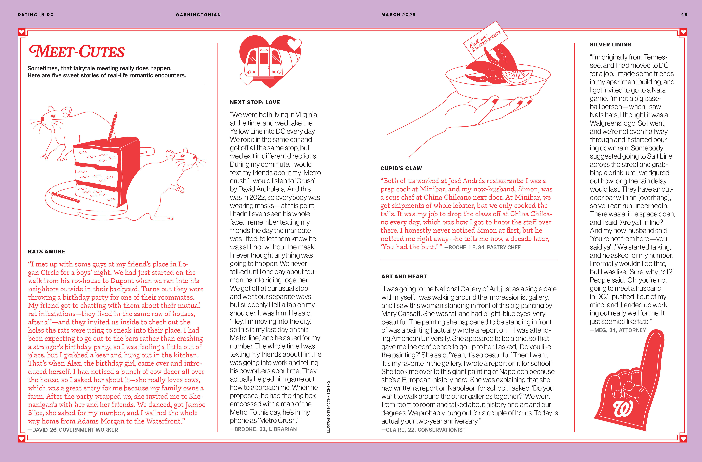
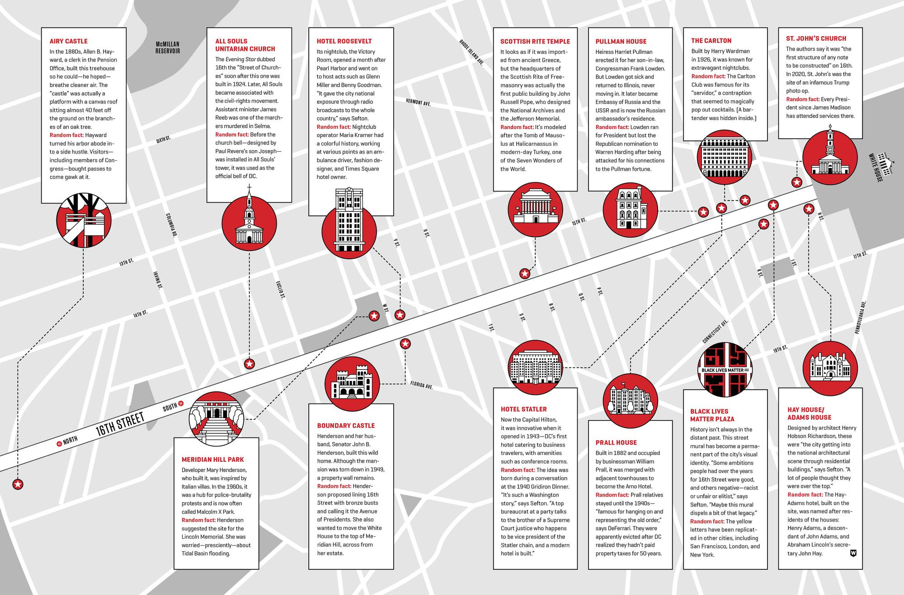
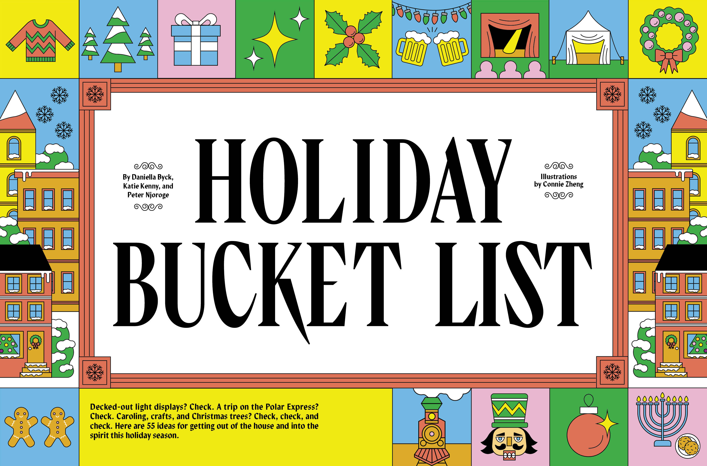
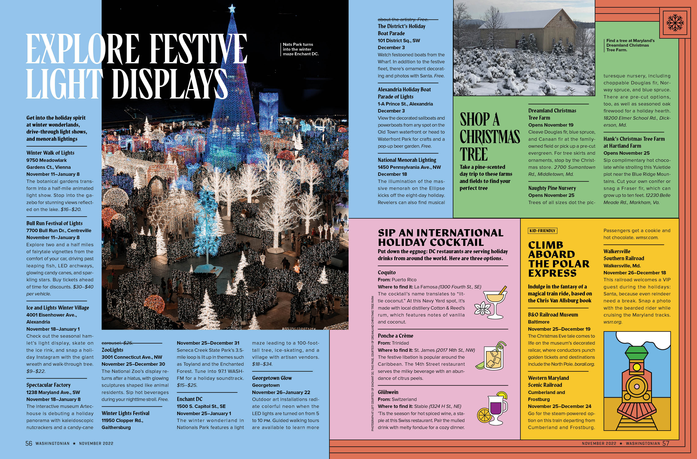

"Open Mic", May 2023 issue of Washingtonian Magazine. Photographs by Jeff Elkins
Illutsrations for Taste, Lifestyle, and Home section of Washingtonain Magazine


"Dating in DC", March 2025 issue of Washingtonian Magazine

"A Guide to 16th Street", February 2022 issue of Washingtonian Magazine


"Holiday Bucket List", November 2022 issue of Washingtonian Magazine
Back to Top